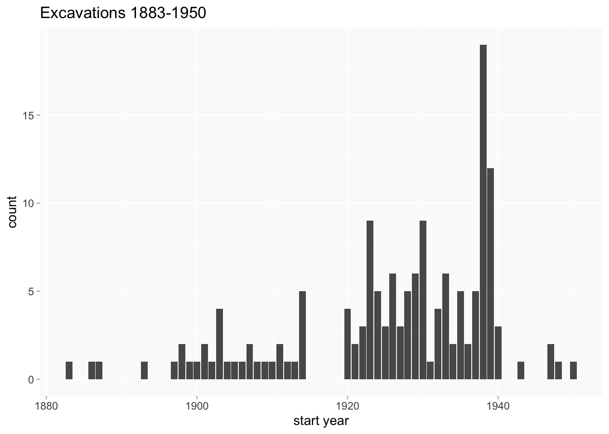
Networks part 1: Excavations
ppa
excavations
networks
Exploration of excavation networks
Notes
total of 155 excavations at time of writing (removed one excavation with date 1960)
“participants” refers only to directors and members of excavations; there are occasionally other associated people who I’ve not tried to count or include in networks at present (eg facilitated by, collaborated with [I’m not sure if the latter ever adds any additional names or just repeats directors])
Unnamed participants are dropped from network analysis; I’m also dropping a single individual whose gender is unknown.
notes on sources
(via AT)
- if a dig has multiple seasons there can be annual progress reports which are detailed about people etc and final summary reports with an overview but less detail
- people’s contributions are not exclusively at the dig itself; eg data analysis for reports (need to look at roles?)
- a lot of the data has come from CAS reports which are not that detailed (though they are datable)
- more detail may be available in many cases but harder to track down
wikibase
data from
- excavation pages
- director/member of excavation statements in person pages
merged all distinct individuals from both sources and deduplicated
I haven’t done much with the director/member distinction so far; if someone was recorded as both director and member on the same excavation (a rare occurrence), I kept only the director role.
dates
- many excavations cover more than one year, though rarely by very much
- dates can be in various places on the excavation page and/or in individual participant pages
- sometimes individual participants’ dates vary
- a few excavations have date information only in the excavation description (where possible I’ve added this as a supplement)
So I’ve simplified dates for analysis:
- bring together all associated dates from the different sources
- record earliest and latest dates
- use the earliest date throughout (
start year), unless otherwise stated
Occasionally this is a bit unsatisfactory; eg there is an excavation with dates from 1929 to 1934 which gets put in the 1920s group though obviously it’s more 1930s really. An individual participant’s earliest date might be later than the overall start date, though rarely by more than a year or so.
todo
- places (this may be a non-networky thing though)
Things I probably won’t try to do
- change over time (in any detail), but I do have a method worked out for this and will try it on SAL elections
- I thought about more complex analyses, eg a directed network (directors > members) or bimodal network (excavations / people), but I’m not convinced they’d justify the extra work
Overview
dates
note via AT:
I think the spike in excavations in the late 1930s is down to excavations of roman sites being reported in the Journal of Roman Studies, which one of our interns was working on
I’ve experimented with splitting into periods (by start year), but it’s been difficult to find meaningful/balanced buckets, apart from the breaks created by WW1 and WW2 (no excavations during WW1 and only a handful during WW2).
- 1883-1914 (“1900”)
- 1920-29 (“1920”)
- 1930-39 (“1930”) - nearly half of all excavations and more than half of participants
- 1940-50 (“1950) - very few so mostly ignored
[pie charts are frowned upon in the dataviz world these days, but I still like them where there is a small number of categories with very clear contrasts in proportions.]
participants per excavation
(including unnamed people)
very wide variation in numbers; largest (Q2560) has 42 people but vast majority have only one or two (6 have more than 10; only four have more than 10 named participants).

Four of the six excavations with more than 10 participants are in the 1930s, and the 1930s excavations tend to have more recorded participants.
excavations per person
(named participants only)
Of the 257 named individuals in the network, only 80 (at time of writing) are recorded in more than one excavation.
22 people have no connections to anyone else (because they are the sole recorded participant in their excavation(s)) and a further 29 (most in a single excavation) are linked to only one other person.
This makes for a very sparse network (which is far from unusual).

Network
This is an “undirected” network. (A directed network is one where the connections between nodes are asymmetrical, eg senders and receivers of letters.) People are “nodes” and the links between them, created by being participants on the same excavation, are “edges”.
I think it should be borne in mind for the men in the network that this is only reflecting their connectedness to women, and they might not look exactly the same in a full set from the same sources that included male only excavations (which are presumably the majority?).
degree-distribution plots
The “degree” is a simple count of a node’s links. Counting how many nodes have each degree can tell you something about the overall structure of the network, which can be visualised in degree-distribution plots.
We’d quite like them to look something like these, in which a very small number of nodes have a lot of connections goes down (in a fairly straight line) to many nodes with a very small number of connections. This is a very common pattern in networks.
(source)
This is what the degree-distribution plot for the whole excavation network actually looks like. Very very broadly speaking it’s somewhere in the same zone (a few nodes with high degree, a lot of nodes with low degree). But it has bulges.
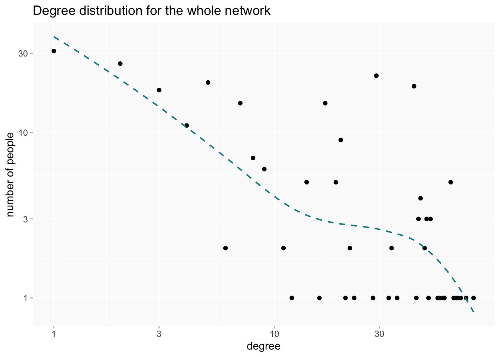
By period (excluding the handful of 1940s excavations).
The 1900s set is too small for any statistical analysis to be meaningful. The 1920s are a bit weird. The 1930s look much the same as the overall picture (considering they form the bulk of it, not surprising).
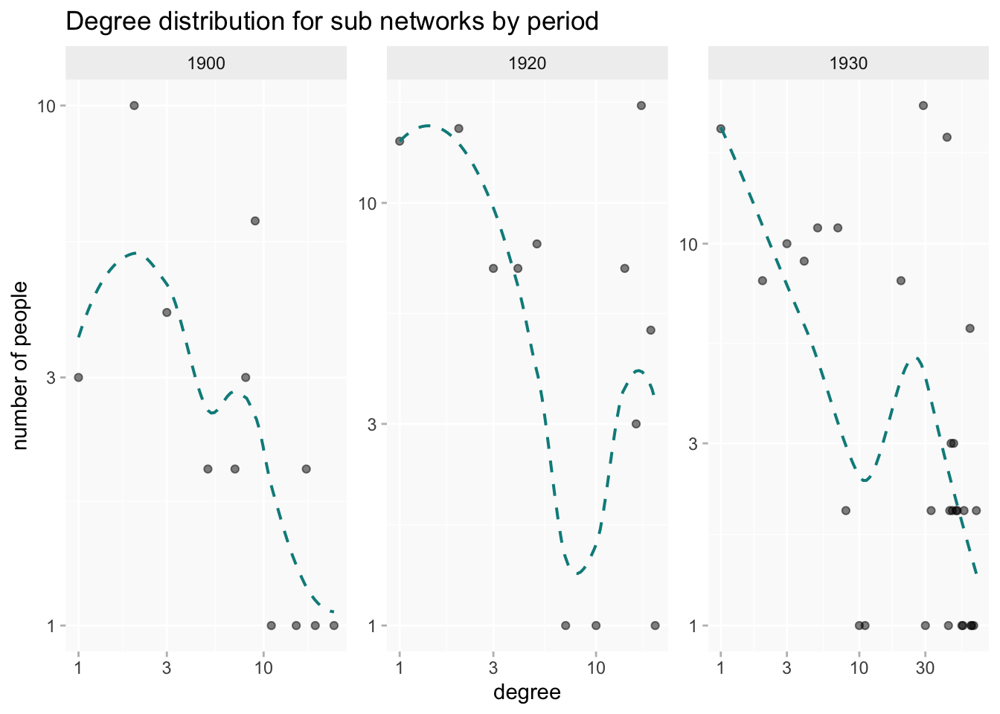
A different kind of split, by number of participants per excavation. Interestingly, the distribution of excavations with up to 5 people looks much more like the “expected” pattern. The bulginess is in the larger excavations
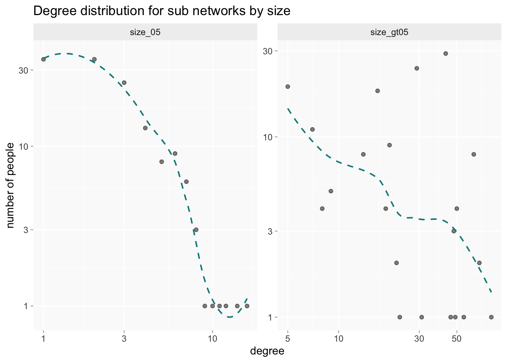
I think this is happening because the large excavations have quite a lot of people who only appear in those large excavations, often in just one. If there are (for example) 20 people on an excavation and 18 of them are only recorded on that excavation, the 18 will all have degree of 18. Notably, the single larger 1920s excavation, Richborough (Q3380), has 17 participants and only three of them appear on any other excavation. (The decade as a whole has only 79 named participants in 43 excavations.)
This is one of the reasons why simply counting links between nodes in a network is a limited measure; it can be useful, like this, to get a picture of the network as a whole but misleading for understanding individuals within the network.
Highly connected individuals
The limitations of counting links is why a number of different “centrality” measures have been developed in network analysis. These heatmaps compare rankings for four of the most commonly used:
- degree (how many connections a node has)
- betweenness (how well a node connects other nodes)
- eigenvector (how close a node is to well-connected nodes)
- harmonic closeness (on average, how close a node is to every other node in the network)
(I’m using rankings because the measures produce very different sorts of scores which are not directly comparable.)
Top ten rankings are coloured and other rankings are in grey. The most striking thing here is just how much they can vary. Only one person (Tessa Verney Wheeler) is in the top ten on every measure.
An interesting absence is Margaret Murray who is recorded in 7 excavations (the same number as Mortimer Wheeler) but she has only 18 connections and her highest ranking is at 22 [betweenness].
Also perhaps worth noting that Maud and B.H. Cunnington are absolutely nowhere in any rankings in spite of being recorded on more excavations than anyone else (9), because they only connect to each other. That may reflect the sources too, given that most of their excavations were pre-WW1, though I see that Maud had a reputation for being “difficult”.
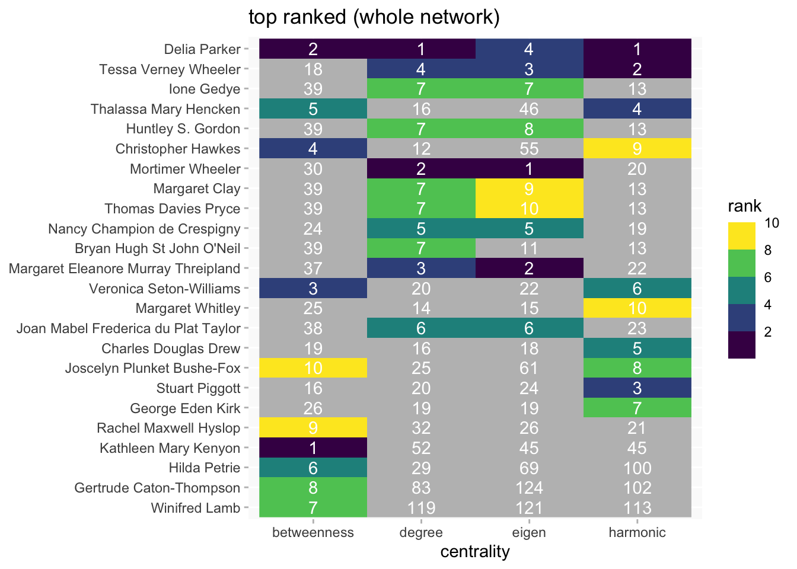
Because there’s so much variation I hesitated over doing averages of the rankings; I’ve tried out a boxplot combined with beeswarm. It’s possibly a bit odd looking (lol) but I quite like it.
It turns out that at the top end of the chart (it’s been sorted by median average) there’s quite a bit of consistency; for 2 to 10 the lowest rankings are in the 20s.
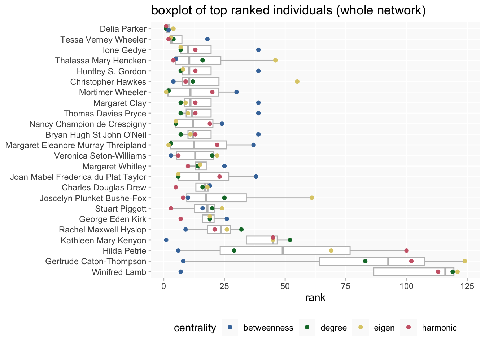
Trying the beeswarm/boxplots for sub-networks
1930s

1920s
This decade looks really weird. (Miss Hobling, Aileen Fox and Joscelyn Plunket Bushe-Fox are the three Richborough people who are on at least one other excavation.)

Pre-WW1
Again, a bit doubtful but does at least put some individuals you’d expect at the top. Margaret Murray’s back! I expanded it to the top 12 just to see where Petrie had got to.
the big four problem
So far, so weird. The “big four” excavations (Maiden Castle, Colchester, Verulamium and Richborough) are really causing all sorts of problems here. While I would assume that they really were important and big excavations - hence the existence of detailed records compared to many others - they’re having some very disproportionate effects. This is most obvious for Richborough in the 1920s, given that there’s more data generally for the 1930s. But not confined to it.
To go back to the top 10s, several of these apparently high ranked individuals only appear in one or more of the big excavations. This may not necessarily be “wrong”; Wikipedia tells me that Hugh O’Neil really was an important figure in British archaeology. Huntley S Gordon, on the other hand, doesn’t even seem to be listed in the ADS library.
I don’t want to drop the big excavations entirely. But could I remove some of their data to make them more consistent with the level of recording we have for other excavations?
One thing it’s easy to do is simply take out those people who do not appear in any other excavations and see what happens. (Yes, this is probably a really monstrous idea.)
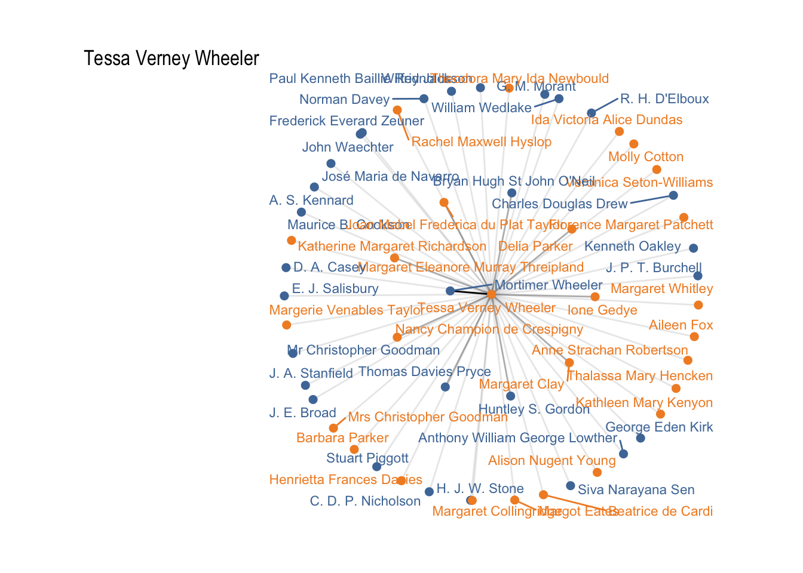
(In this version Tessa and Mortimer have identical median average, though Tessa still comes out top by mean.)
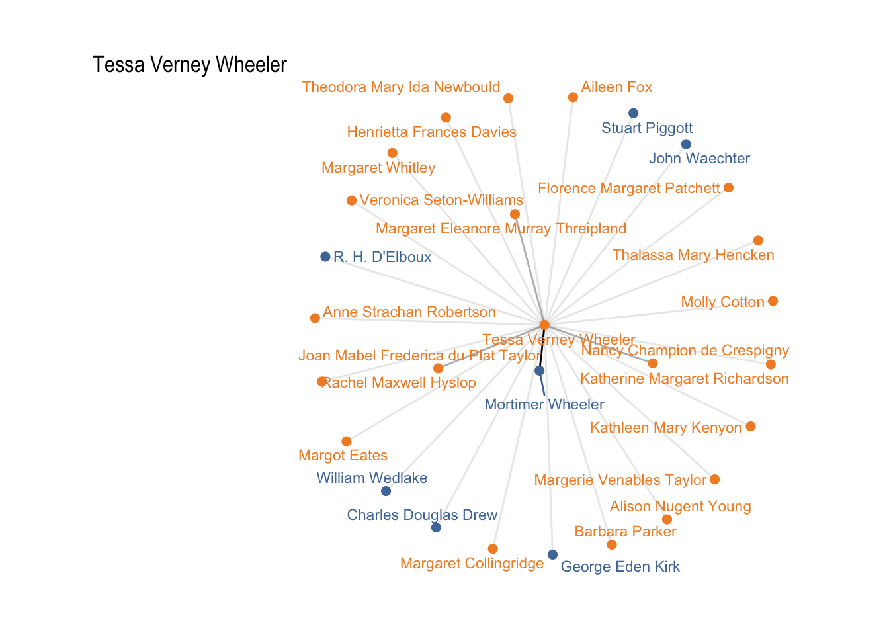
This isn’t necessarily a more accurate picture of the most connected people in the network, but it is arguably a more useful one.
circles
Some very simple graphs of the links for the top ranked. These are just their immediate connections (I can’t at the moment quite get a cleverer neighbourhood graph to work properly; will update if I can work out the problem).
The focus person is the centre node; the length and weight of edges represent the number of connections (shorter and darker = more connections). Colour is used for gender.
Here’s Tessa Verney Wheeler’s “circle” including everyone.
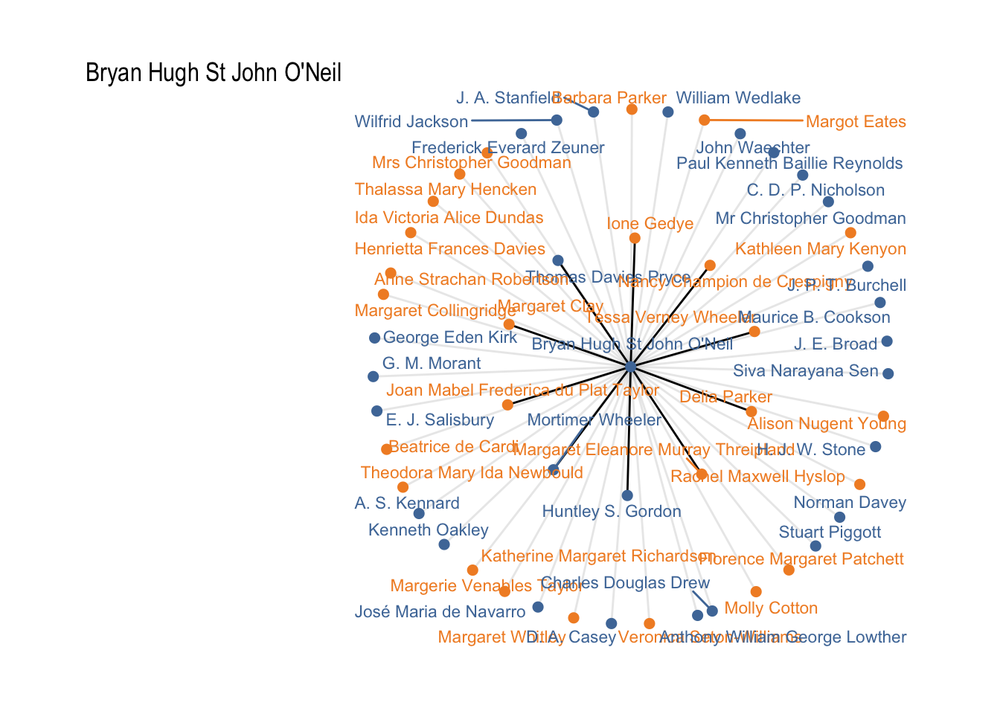
And after removing the big-four-only individuals.

Same for Mortimer Wheeler
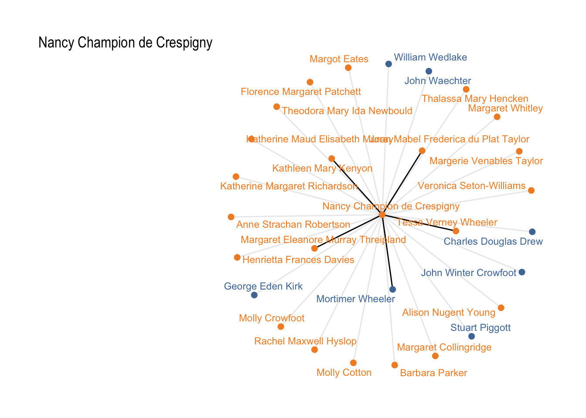
For reference, this is the circle for Hugh O’Neil. (I’m not going to do any other ‘removed’ individuals because (guess what!) they’re virtually the same.)
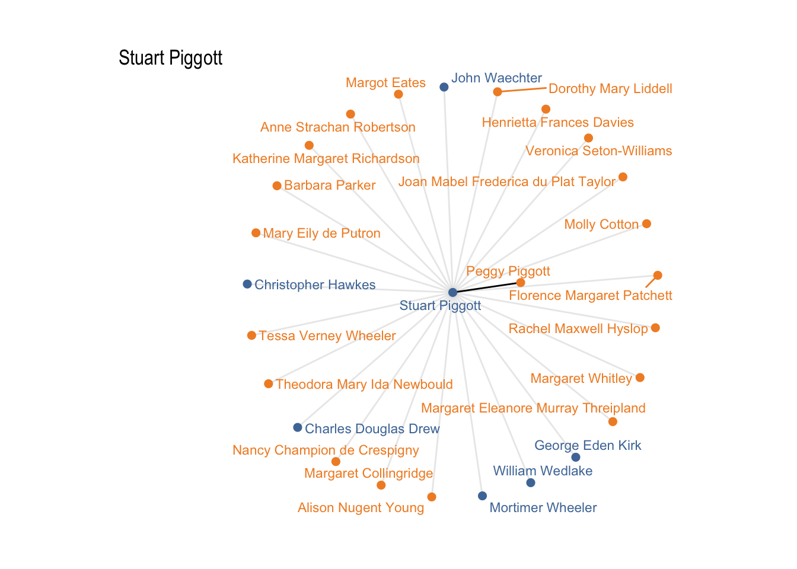
The rest are the “removed” versions only, but I can do the full ones if wanted.
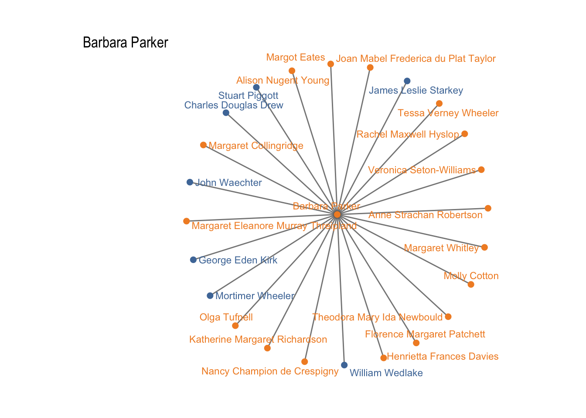
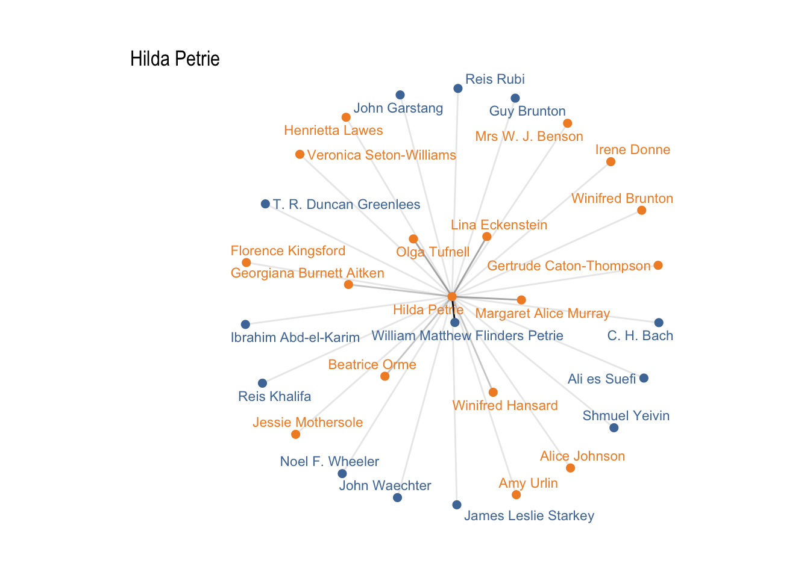
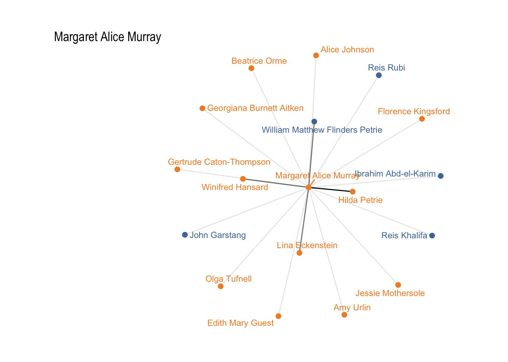

Other circles of possible interest…
(I can do others on request)
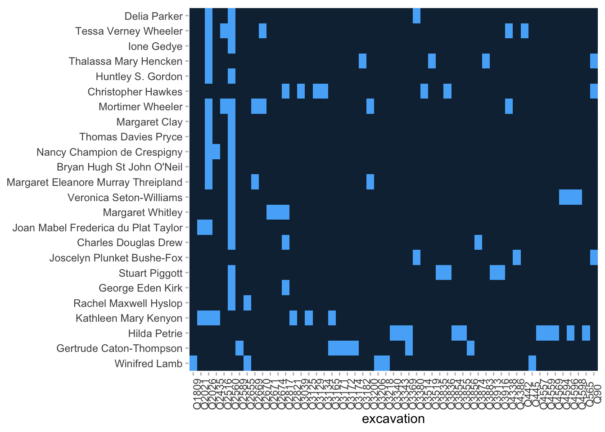
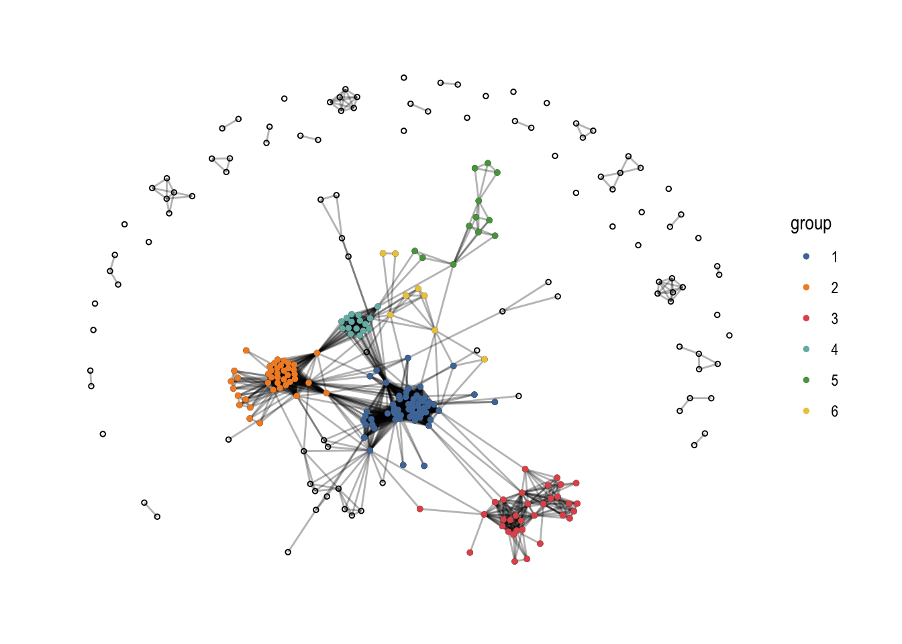
Clusters
A closer look at the excavations for the top ten rankings (all individuals again).
[There isn’t space for excavation names on the x axis here. Q2026 = Verulamium; Q2560 = Maiden Castle; Q90=Colchester; Q3380=Richborough.]
The overlap between Verulamium and Maiden Castle is very obvious. But Colchester accounts for only a handful of individuals in the set. Richborough also has only a couple. So, notwithstanding the problems with sources, this suggests there are some distinct clusters or communities in the network.

A network graph of the whole network is otherwise not very revealing but also hints at some distinct clusters.

But (of course!) there are multiple possible ways to identify clusters in a network. I tried out a few; many of them tended to give quite similar results. But I need to do more reading on the differences. Here I use one called edge betweenness (mainly because I think I at least understand the idea).
The idea behind this method is that the betweenness of the edges connecting two communities is typically high, as many of the shortest paths between vertices in separate communities pass through them. The algorithm successively removes edges with the highest betweenness, recalculating betweenness values after each removal. This way eventually the network splits into two components, then one of these components splits again, and so on, until all edges are removed. network graph highlighting the 8 largest community clusters. The resulting hierarhical partitioning of the vertices can be encoded as a dendrogram.
highlighting the six largest clusters

Who are the members of these possible clusters?
This is where an interactive zoomable version of the graphs might come in useful… I’ll think about that.
Cluster 1 - Team Wheeler
Cluster 2 - a lot of people in this cluster are in a single excavation, many but not all at Colchester (it looks odd to me that such a large excavation should seem so isolated, regardless of problems with sources).
Cluster 3 - clear chronological difference
Cluster 4 - all Richborough
Cluster 5
Cluster 6
Tables
See excavations browser for full people and excavations list.
Nodes
Edges
Because the network is undirected “from” and “to” don’t have any special meaning. There is a unique pair of people per row and “weight” = the number of links between the pair.
A person can appear in either column, so if you want to look for anyone you should use the search box rather than column filters.